4.5 Area between Curves
Pre-Class 4.5A:
- Complete 4.4B Homework assignment: check and correct.
- Take notes on the videos and readings (use the space below).
- Work and check problem #1 in the 4.5 NOTES section.
- Complete the 4.5A Pre-Class Quiz.
Pre-Class 4.5B:
- Complete 4.5A Homework assignment: check and correct.
- Work and check problems #9 in the 4.5 NOTES section.
- Complete the 4.5B Pre-Class Quiz.
Introduction
Before 1995, the U. S. Census Bureau used the model below to project the number (in thousands) of households in the United States, where $t$ is the number of years after 1990. $${N_1} = 1.35{t^2} + 1078.4t + 92,323\quad$$ For the years 1995-2005, the actual number of households $N$ in the United States can be modeled by $${N_2} = 18.32{t^2} + 1178.3t + 92,099$$
-
Graph ${N_1}$ on the interval $\;5 \le t \le 15$ and shade the area under the curve. What does this shaded area represent?
This shaded area represents the projected number of households in the United States from 1995 to 2005.

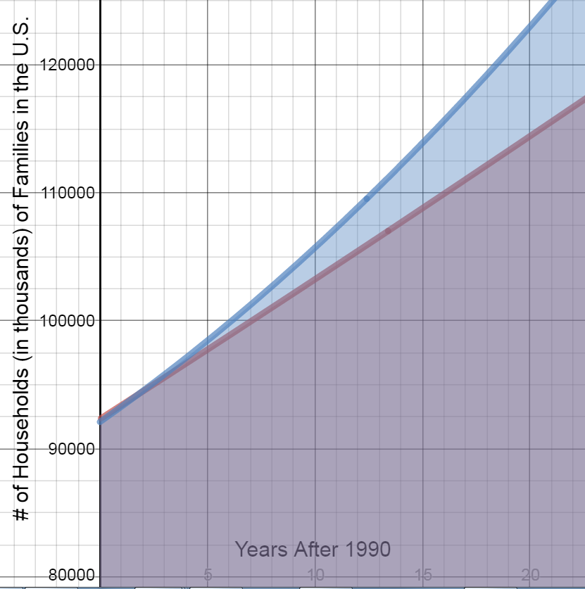
-
Now graph ${N_2}$ on the interval $\;5 \le t \le 15$ on the same graph and shade the area under the curve. What does this shaded area represent?
This shaded area represents the actual number of households in the United States from 1995 to 2005.
-
Did the projection model over-project or under-project the number of households?
The projection model under-projected the number of households.
-
How would you determine the difference in the number of households given by each model?
Subtract the bottom equation from the top.
-
Find the difference in the number of households for the two models.
$\begin{align}&\int_{5}^{15}{\left((18.32{{x}^{2}}+1178.3x+92,099)-(1.35{{x}^{2}}+1078.4x+92,323)\right)\;dx}\end{align}$
$=26,134.17$
The difference between the two models is 26,134 households.
Notes
Area Between Curves
Area Between Curves
If $f$ and $g$ are continuous and $f\left( x \right)\; > \;g\left( x \right)$ over the interval $\left[ {a,b} \right]$, then the area bounded by $y\; = \;f\left( x \right)$ and $y\; = \;g\left( x \right)$for $a\; \le x \le b$ is given exactly by $$A =\begin{align}&\int\limits_a^b \left[ {f\left( x \right) - g\left( x \right)} \right]\;dx\end{align}.$$
Area Bounded by an Interval
Find the area bounded by the graphs of the indicated equations over the given interval. Compute answers to three decimal places.
-
$y_1 = \; - x + 7$ and $y_2 = 0$ on the interval $ - 3 \le x \le 3$

$Area=\begin{align}&\int_{-3}^{3}{\left(y_1-y_2 \right) dx}\end{align}$
$=\begin{align}&\int_{-3}^{3}{\left((-x+7)-0 \right) dx}\end{align}$
$=\left(-\frac{{{x}^{2}}}{2}+7x+C\right)│ _{-3}^{3} $
$=(-\frac{9}{2}+21+C)-(-\frac{9}{2}-21+C)$
$=-\frac{9}{2}+21+C+\frac{9}{2}+21-C$
$=42\ unit{{s}^{2}}$
-
$y_1 = \; - \frac{1}{4}{x^3} + 2 \quad$ and $\quad y_2 = 0 \quad$ on the interval $ - 2 \le x \le 1$
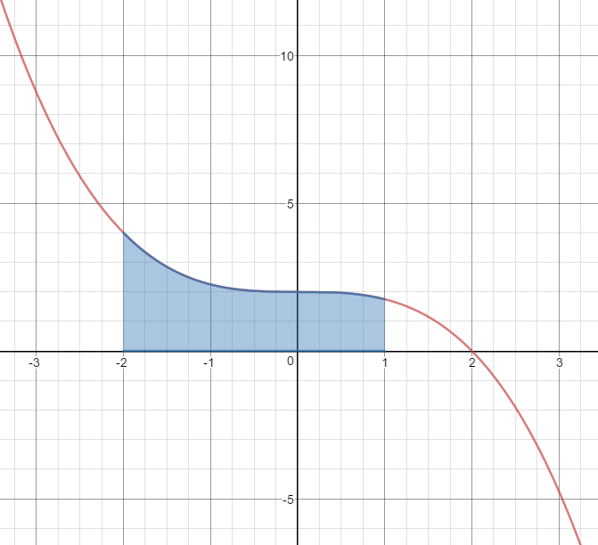$Area=\begin{align}&\int_{-2}^{1}{\left(y_1-y_2 \right) dx}\end{align}$
$=\begin{align}&\int_{-2}^{1}{\left(\left(-\frac{1}{4}{{x}^{3}}+2\right)-0 \right) dx}\end{align}$
$=\left(-\frac{1}{4}\left(\frac{{{x}^{4}}}{4}\right)+2x+C \right)\left)│ _{-2}^{1} \right.$
$=(-\frac{{{x}^{4}}}{16}+2x+C\left)│ _{-2}^{1} \right.$
$=(-\frac{1}{16}+2+C)-(-\frac{16}{16}-4+C)$
$=-\frac{1}{16}+2+1+4$
$=6.9375\ unit{{s}^{2}}$
-
$y_1 = \;x\left( {4 + x} \right)\quad $ and $\quad y_2 = 0 \quad$ on the interval $\; - 3 \le x \le - 1$
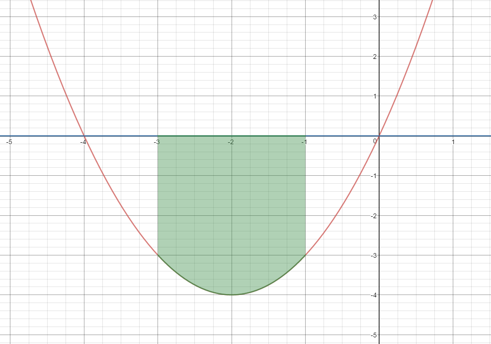$Area=\begin{align}&\int_{-3}^{-1}{\left(y_2-y_1 \right) dx }\end{align}$
$=\begin{align}&\int_{-3}^{-1}{\left(0-(4x+{{x}^{2}})\right)\;dx}\end{align}$
$=\begin{align}&\int_{-3}^{-1}{\left(-4x-{{x}^{2}} \right)}\;dx\end{align}$
$=(-\frac{4{{x}^{2}}}{2}-\frac{{{x}^{3}}}{3}+C\left)│ _{-3}^{-1} \right.$
$=(-2{{x}^{2}}-\frac{{{x}^{3}}}{3}+C\left)│ _{-3}^{-1} \right.$
$=(-2(1)-(-\frac{1}{3})+C)-(-2(9)-(-9)+C)$
$=-2+\frac{1}{3}+18-9$
$=7.33\ unit{{s}^{2}}$
-
$y_1 = \; - \frac{2}{x}\quad$ and $\quad y_2 = 0 \quad$ on the interval $1 \le x \le e$
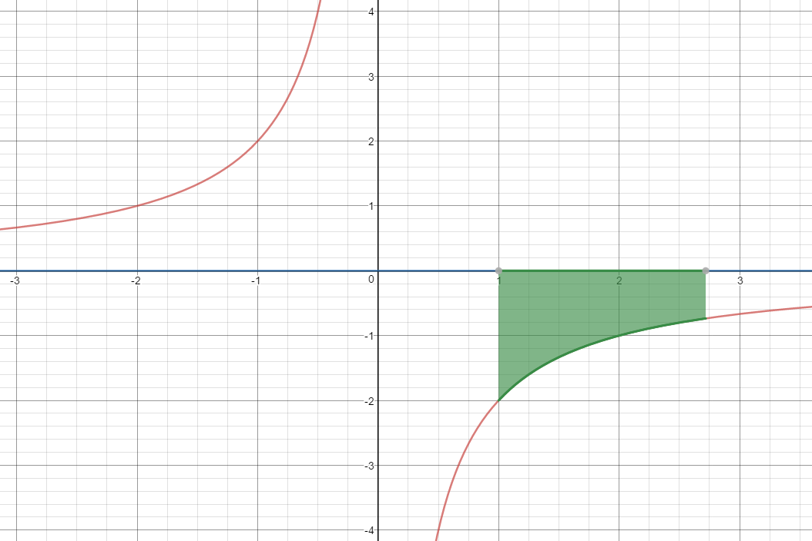$Area=\begin{align}&\int_{1}^{e}{\left(y_2-y_1 \right) dx }\end{align}$
$=\begin{align}&\int_{1}^{e}{\left(0-(-\frac{2}{x})\right)\; dx}\end{align}$
$=\begin{align}&\int_{1}^{e}{\frac{2}{x}}\; dx\end{align}$
$=(2\ln \left| x \right|+C\left)│ _{1}^{e} \right.$
$=2\ln e-2\ln 1$
$=2(1)-2(0)$
$=2\ unit{{s}^{2}}$
-
$y_1 = \; - x - 3\quad$ and $\quad y_2 = 0\quad$ on the interval $ - 7 \le x \le 2$
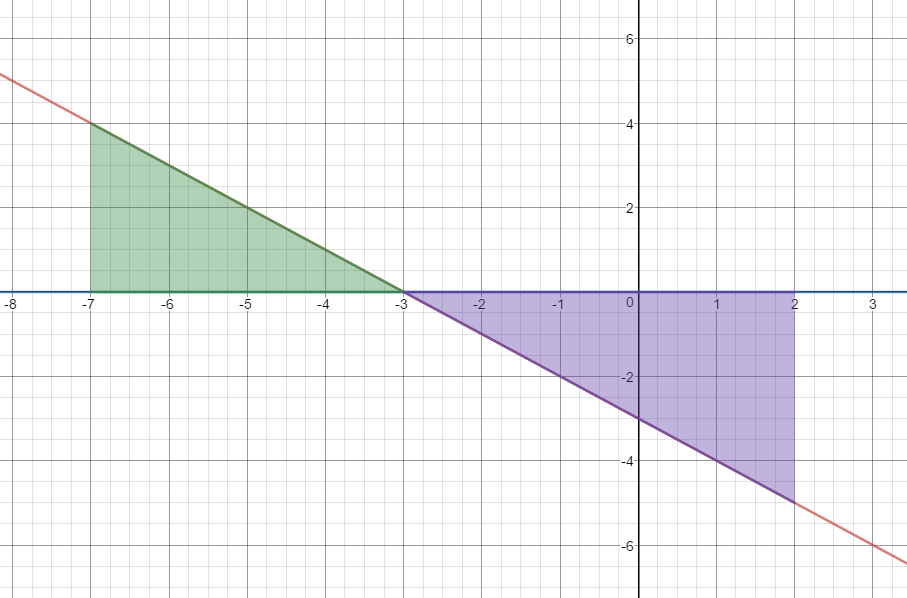
$Area=\begin{align}&\int_{-7}^{-3}\left(y_1-y_2\right)\;dx\end{align}$$+\begin{align}&\int_{-3}^{2}\left(y_2-y_1\right)\;dx\end{align}$
$=\begin{align}&\int_{-7}^{-3}\left(\left(-x-3\right)-0\right)\;dx\end{align}$$+\begin{align}&\int_{-3}^{2}\left(0-\left(-x-3\;\right)\right)\;dx\end{align}$
$=\left(-\frac{x^2}2-3x+C\right)|_{-7}^{-3}+\left(\frac{x^2}2+3x+C\right)|_{-3}^2$
$=(4.5--3.5)+(8--4.5)$
$=8+12.5$
$=20.5\ unit{{s}^{2}}$
-
$y_1 = \; - x + 7\quad$ and $\quad y_2 = - 2\quad$ on the interval $ - 3 \le x \le 3$
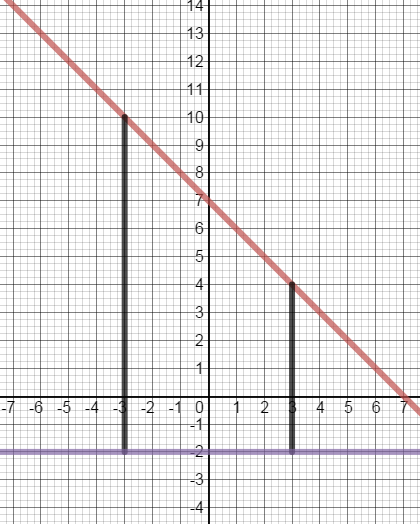
$Area=\begin{align}&\int_{-3}^{3}{(y_1-y_2)\;dx}\end{align}$
$=\begin{align}&\int_{-3}^{3}{\left((-x+7)-(-2)\right)\;dx}\end{align}$
$=\begin{align}&\int_{-3}^{3}{\left(-x+7+2\right)\;dx}\end{align}$
$=\begin{align}&\int_{-3}^{3}{\left(-x+9\right)\;dx}\end{align}$
$=(-\frac{{{x}^{2}}}{2}+9x+C\left)│ _{-3}^{3} \right.$
$=(-\frac{9}{2}+27+C)-(-\frac{9}{2}-27+C)$
$=-\frac{9}{2}+27+C+\frac{9}{2}+27-C$
$=54\ unit{{s}^{2}}$
-
$y_1 = \; - x - 3 \quad$ and $\quad y_2 = 1.5\quad$ for the interval $ - 7 \le x \le 2$
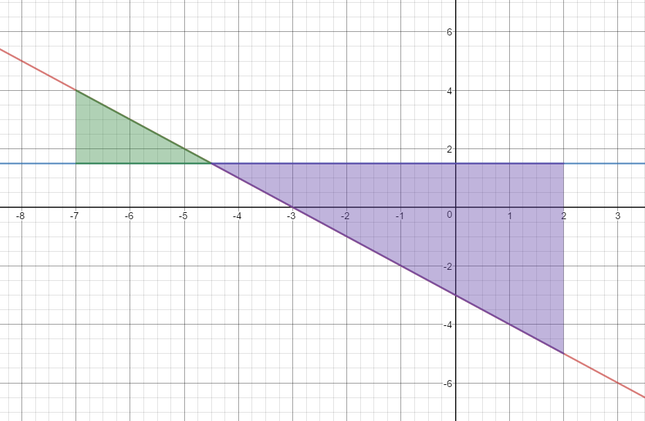$Area=\begin{align}&\int_{-7}^{-4.5}\left(y_1-y_2\right)\;dx\end{align}$$+\begin{align}&\int_{-4.5}^{2}\left(y_2-y_1\right)\;dx\end{align}$
$\begin{align}&\int_{-7}^{-4.5}\left(\left(-x-3\right)-1.5\right)\;dx\end{align}$$+\begin{align}&\int_{-4.5}^{2}\left(1.5-\left(-x-3\;\right)\right)\;dx\end{align}$
$\begin{align}&\int_{-7}^{-4.5}\left(-x-4.5\right)\;dx\end{align}$$+\begin{align}&\int_{-4.5}^{2}\left(4.5+x\right)\;dx\end{align}$
$(\frac{-{{x}^{2}}}{2}-4.5x+C\left)│ _{-7}^{-4.5} \right.$
$+(4.5x+\frac{{{x}^{2}}}{2}+C\left)│ _{-4.5}^{2} \right.$
$(10.125-7)+(11--10.125)$
$3.125+21.125$
$24.25\ unit{{s}^{2}}$
-
$y_1 = \;\ln (x + e) \quad$ and $\quad y_2 = {e^x} - 5\quad$ on the interval $0 \le x \le 1$
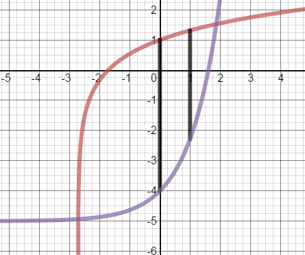$Area=\begin{align}&\int_{0}^{1}\left(y_1-y_2\right)\;dx\end{align}$
$=\begin{align}&\int_{0}^{1}\left(\ln (x+e)-({{e}^{x}}-5)\right)\;dx\end{align}$
$=\begin{align}&\int_{0}^{1}\left(\ln (x+e)-{{e}^{x}}+5\right)\; dx\end{align}$
$=\begin{align}&\int_{0}^{1}\ln (x+e)\; dx\end{align}$$+\begin{align}&\int_{0}^{1}\left(-{{e}^{x}}+5\right)\; dx\end{align}$
$u=x+e$
$du=dx$
$=\begin{align}&\int_{x=0}^{x=1}ln u\;du +\int_{0}^{1}(-{{e}^{x}}+5)\;dx\end{align}$
$=\left(u\ln\left|u\right|-u+C\right)\vert_{x=0}^{x=1}+\left(-e^x+5x\right)|_0^1$
$=\left[\left(x+e\right)\ln\left|x+e\right|-\left(x+e\right)+-e^x+5x\right]|_0^1$
$=((1+e)\ln \left| 1+e \right|-1-e-e+5)-((0+e)\ln \left| 0+e \right|-0-e-{{e}^{0}}+0)$
=$3.45-(e\ln e-e-1)$
=$3.45-(-1)$
=$4.45\;units^2$
Define the total area bounded by the two functions. How would you determine the interval, if you were asked to calculate the total area bounded between the two functions?
Area Not Bounded by an Interval
Find the area bounded by the graphs of the indicated equations.
-
$y_1 = {x^3} + 1 \quad$ and $\quad y_2 = x + 1$
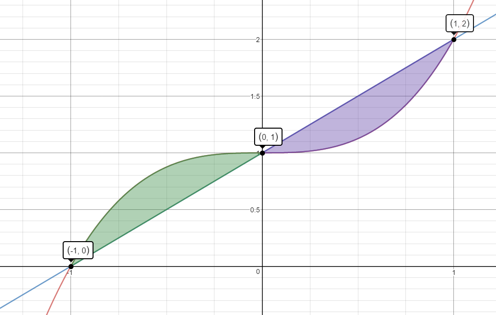$Area=\begin{align}&\int_{-1}^{0}\left(y_1-y_2\right)\;dx\end{align}$$+\begin{align}&\int_{0}^{1}\left(y_2-y_1\right)\;dx\end{align}$
$\begin{align}&\int_{-1}^{0}\left(({{x}^{3}}+1)-(x+1)\right)\;dx\end{align}$$+\begin{align}&\int_{0}^{1}\left((x+1)-({{x}^{3}}+1)\right)\;dx\end{align}$
$\begin{align}&\int_{-1}^{0}{({{x}^{3}}-x)\;dx}\end{align}$$+\begin{align}&\int_{0}^{1}{(x-{{x}^{3}})\;dx}\end{align}$
$(\frac{{x}^{4}}{4}-\frac{{x}^{2}}{2})|_{-1}^{0}+(\frac{{x}^{2}}{2}-\frac{{x}^{4}}{4})|_{0}^{1}$
$[(0-0)-(\frac{1}{4}-\frac{1}{2})]+[(\frac{1}{2}-\frac{1}{4})-(0-0)]$
$\frac{1}{4}+\frac{1}{4}$
$\frac{1}{2}\;units^2$
-
$y_1 = - {x^3} - 2{x^2} + 1\quad$ and $\quad y_2 = - x - 1$
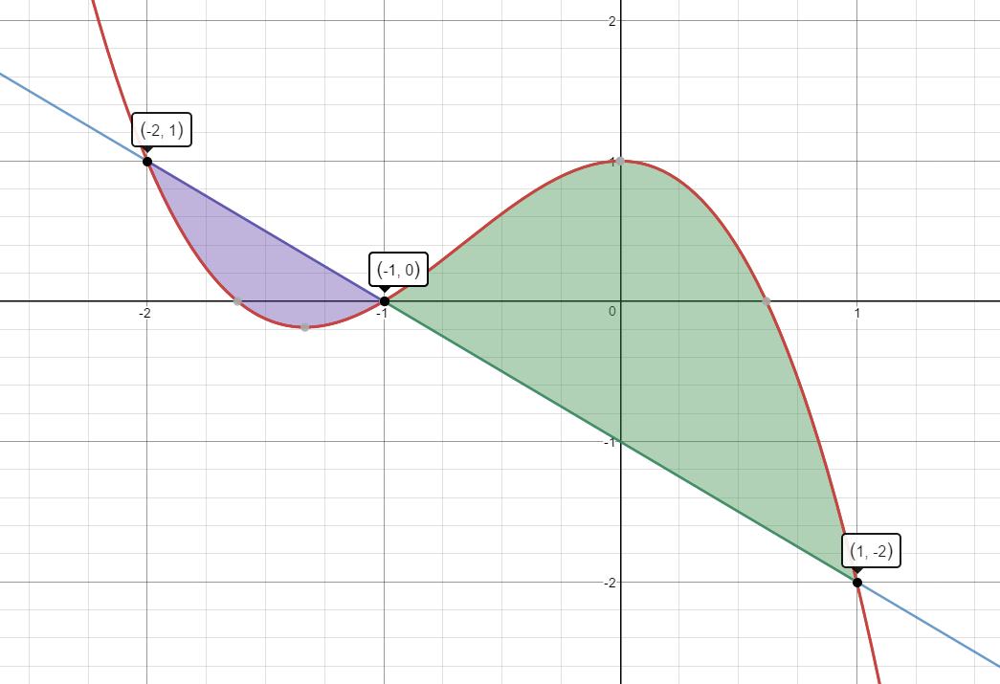$Area=\begin{align}&\int_{-2}^{-1}\left(y_2-y_1\right)\;dx\end{align}$$+\begin{align}&\int_{-1}^{1}\left(y_1-y_2\right)\;dx\end{align}$
$\begin{align}&\int_{-2}^{-1}\left((-x-1)-(-{{x}^{3}}-2{{x}^{2}}+1)\right)\;dx\end{align}$$+\begin{align}&\int_{-1}^{1}\left((-{{x}^{3}}-2{{x}^{2}}+1)-(-x-1)\right)\;dx\end{align}$
$\begin{align}&\int_{-2}^{-1}\left(-x-1+x^3+2x^2-1\right)\;dx+\int_{-1}^1\left(-x^3-2x^2+1+x+1\right)\;dx\end{align}$
$\begin{align}&\int_{-2}^{-1}\left(x^3+2x^2-x-2\right)\;dx+\int_{-1}^{1}\left(-x^3-2x^2+x+2\right)\ dx\end{align}$
$(\frac{{{x}^{4}}}{4}+\frac{2{{x}^{3}}}{3}-\frac{{{x}^{2}}}{2}-2x+C\left)| _{-2}^{-1} \right.+(\frac{-{{x}^{4}}}{4}-\frac{2{{x}^{3}}}{3}+\frac{{{x}^{2}}}{2}+2x+C\left)| _{-1}^{1} \right.$
$(1.0833-0.667)+(1.5833--1.0833)$
$0.4167+2.6667$
$3.08\;units^2$
-
$y_1 = - 3 + {x^2}$ and $y_2 = - {e^{2x - 3}} + 2$
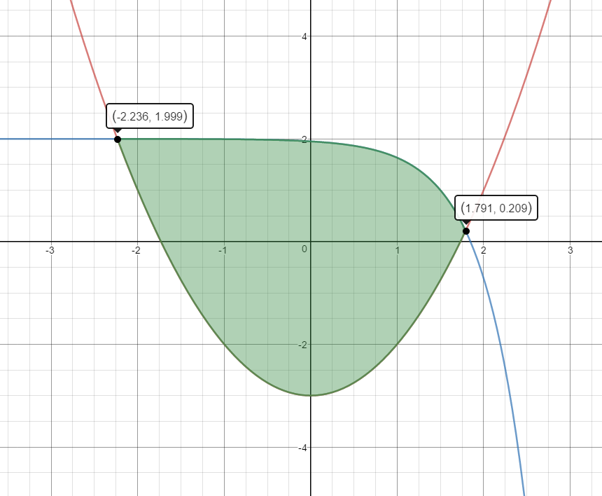The functions intersect at $x=1.79$ and $x=-2.24$, therefore the area is bound in the interval [-2.24, 1.79].
Area=$\begin{align}&\int_{-2.24}^{1.79}(y_2-y_1)\;dx\end{align}$
$=\begin{align}&\int_{-2.24}^{1.79}{(-{{e}^{2x-3}}+2)-(-3+{{x}^{2}}})\;dx\end{align}$
$=\begin{align}&\int_{-2.24}^{1.79}\left(-e^{2x-3}-x^2+5\right)\;dx\end{align}$
$u=2x-3$
$du=2dx$
$=\frac{1}{2}\begin{align}&\int_{x=-2.24}^{x=1.76}{-{{e}^{u}}\;du}+\int_{-2.24}^{1.76}{-{{x}^{2}}+5\; dx}\end{align}$
$=\frac{1}{2}(-{{e}^{u}})\left| _{x=-2.24}^{x=1.79} \right.+(\frac{-{{x}^{3}}}{3}+5x\left)| _{-2.24}^{1.79} \right.$
$=(\frac{-{{e}^{2x-3}}}{2}-\frac{{{x}^{3}}}{3}+5x\left)| _{-2.24}^{1.79} \right.$
$=6.15-(-7.45)$
$=13.6\;units^2$
-
The useful life of a piece of rental equipment is the duration for which the equipment will be profitable to the rental business, and not how long the equipment will actually last. Many factors affect a piece of equipment’s useful life, including the frequency of use, the age when acquired and the repair policy and certain environmental conditions. The change in revenue for renting the equipment, over time, is modeled by $$R'\left( t \right) = 4t{e^{ - 0.2{t^2}}},$$ in thousands of dollars per year. The change in cost for routine maintenance of the equipment is modeled by $$C'\left( t \right) = .5t,$$ also in thousands of dollars per year. Find the area between the graphs of $C'$ and $R'$ over the interval from the time the equipment is purchased until the equipment reaches the end of its useful life. Interpret the results.
Note: The end of the useful life is t where $C'\left( t \right) = R'(t)$.
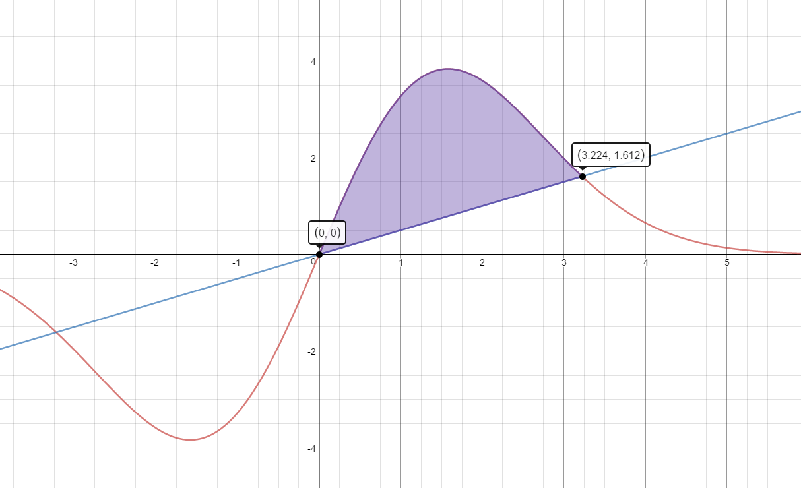Area =$\begin{align}&\int_{0}^{3.22}R'(t)-C'(t)\;dt\end{align}$
$=\begin{align}&\int_{0}^{3.22}{(4t{{e}^{-0.2{{t}^{2}}}}-0.5t})\;dt\end{align}$
$u=-0.2{{t}^{2}}$
$du=-0.4t\;dt$
$=\frac{4}{-0.4}\begin{align}&\int_{t=0}^{t=3.22}{e^u}\;du+\int_{0}^{3.22}-0.5t\;dt\end{align}$
$=-10\begin{align}&\int_{t=0}^{t=3.22}{{{e}^{u}}}\;du +\int_0^{3.22}-0.5t\;dt\end{align}$
$=-10{{e}^{u}}\left| _{t=0}^{t=3.22} \right.+\frac{-0.5{{t}^{2}}}{2}\left| _{0}^{3.22} \right.$
$=-10{{e}^{-0.2{{t}^{2}}}}-0.25{{t}^{2}}\left| _{0}^{3.22} \right.$
$=-3.85-(-10)$
$=6.15$
The useful life of this piece of equipment is 6.15 years.